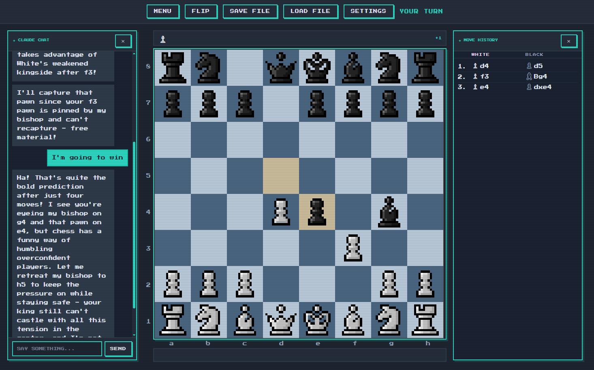
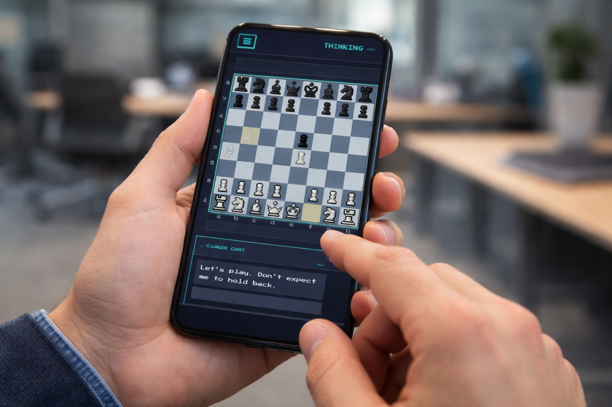

Web app
Claude's Gambit
A browser-based chess game where you play against Claude AI, with three personality modes — friendly, competitive, and silent — and real-time move commentary. A built-in chat lets you talk to Claude about the game mid-match, with full awareness of the board position. Built as a personal project to explore the Claude API, developed with the assistance of Claude Code.